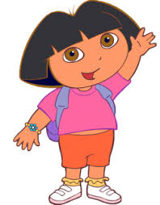

En France, la série est diffusée sur TF1 à partir du 3 août 2001.
Elle consiste à s'adresser au très jeune public en lui faisant apprendre l'anglais, le français ou l'espagnol, tout en amusant et en faisant rire. Dans la version originale américaine, la série enseigne comme langue étrangère l'espagnol.
Chui la carte !Chui la carte !Chui la carte !
Chipper arrete de chiper!Chipper arrete de chiper!Chipper arrete de chiper!Chipper arrete de chiper!
Oh miiiiiiiince!
Voices of: